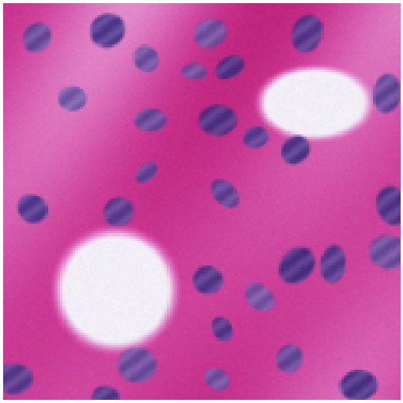
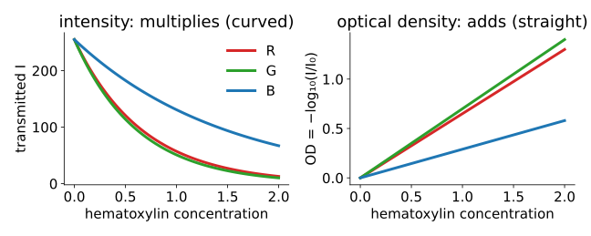
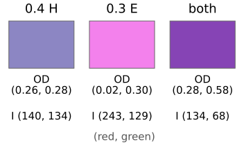
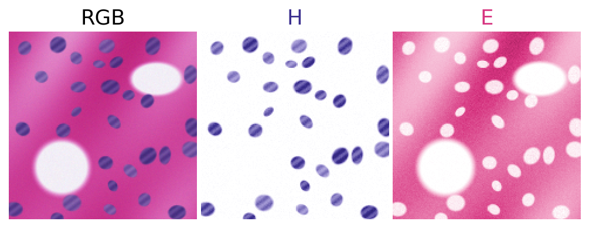
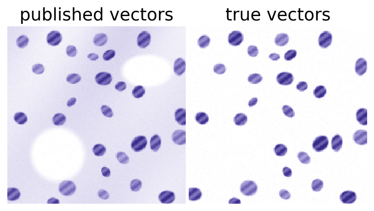
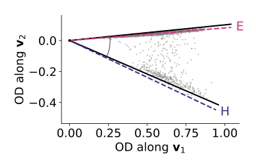

A brightfield histology slide stained with hematoxylin (nuclei, blue-purple) and eosin (cytoplasm, pink), or with hematoxylin and DAB (a brown antibody stain). We want one image per stain.
Stains absorb: they multiply the light. The optical density turns that into a sum.
In optical density the model is the day’s \mathbf y = M\mathbf a with 3 channels and 2–3 stains: colour deconvolution.
What goes wrong: wrong stain vectors, similar stains, dark pixels, the white level.
Estimating the stain vectors from the image (Macenko): vertex finding with two components.
Slides titled The math give the formulas and proofs; the ideas are complete without them.

Synthetic slide of this unit’s demos (Beer–Lambert, seeded).
Recall: colour images are linear light
From the colour day:
A camera turns a spectrum into three numbers; stored values are usually gamma-encoded and must be linearised before any arithmetic on light.
White balance and the brightfield white reference (the empty-slide image, flat-field) are there too: they give I_0, the light that enters the sample.
An image’s pixels as a colour cloud: an H&E slide fills a thin, curved sheet in RGB.
Today: why it is curved, and how to straighten it.
Stains absorb: Beer–Lambert

A layer of stain transmits a fraction of the light; twice the stain transmits that fraction squared: I = I_0 \cdot 10^{-\text{(amount)} \times \text{(absorbance)}}.
Two stains on top of each other multiply their transmissions: intensity is not additive.
The optical density\mathrm{OD} = -\log_{10}(I/I_0) turns products into sums: straight lines in the concentration.
The math: from Beer–Lambert to a linear model
For channel c (red, green, blue), stain k with concentration C_k and absorbance s_{ck}:
\mathbf{od} = S\,\mathbf C: exactly \mathbf y = M\mathbf a, with N = 3 channels.
Column k of S is the stain’s OD vector: how strongly it absorbs red, green and blue. Only its direction matters; scale it to length 1 and let C_k carry the amount.
(Beer–Lambert is a line integral of the absorption along the light path: the same integral as in the Radon elective.)
Optical density by hand
A pixel with I = (80, 120, 200) on a background of I_0 = 255:
Red is absorbed most: a blue-purple pixel, hematoxylin-like.
Additive in OD: 0.4 units of hematoxylin (0.65, 0.70) and 0.3 of eosin (0.07, 0.99) (red, green) give OD (0.26, 0.28) + (0.02, 0.30) = (0.28, 0.58).
Multiplicative in intensity: alone they transmit (140, 134) and (243, 129) of 255; together (134, 68) = 255 \times (140/255) \times (243/255), and likewise for green.

Try it: H&E pixels in RGB
Try it: the same pixels in optical density
The stain matrix and colour deconvolution
Ruifrok & Johnston (2001) published OD vectors (red, green, blue) for common stains: hematoxylin \approx (0.65, 0.70, 0.29), eosin \approx (0.07, 0.99, 0.11), DAB \approx (0.27, 0.57, 0.78).
Put the unit vectors as the columns of S (3 × 3): \mathbf{od} = S\mathbf C, so \mathbf C = S^{-1}\mathbf{od} per pixel: three concentration images.
Two stains only: complete S with a third column perpendicular to both, their cross product: the “residual” channel. Where the two stains explain the pixel, it is 0.
(Ruifrok & Johnston write the vectors as rows; here they are columns, as for the spectra all day.)

Concentration images of the demo’s synthetic slide, deconvolved with its own stain vectors.
The last row of S^{-1} is \hat{\mathbf r} itself: since \hat{\mathbf r} is a unit vector perpendicular to both stains, \hat{\mathbf r}^\top S = (0, 0, 1).
\kappa(S) = 2.8. With DAB instead of the residual, \kappa = 3.8: three stains are harder than two.
Try it: colour deconvolution
What goes wrong
Wrong stain vectors: a real slide’s stains differ from the published ones (staining protocol, scanner). On the demo’s slide, Ruifrok’s eosin vector is 14° off: the estimated H map contains 0.20 of the true eosin. Crosstalk, as in the first unit.
Similar stains: nearly parallel columns, large \kappa: noise amplified (the H map’s noise in unstained areas: sd 0.007 with the true vectors, \kappa = 3.7; 0.020 with a near-parallel eosin vector, \kappa = 10.5).
Dark pixels: I = 0 has infinite OD; it must be clipped, and saturated nuclei lose their linearity.
Wrong I_0: a white level set 15 % too low makes the background’s OD negative (the H map’s background drops to -0.13).
Scattering pigments and stains that bind to each other break Beer–Lambert altogether.

DAB is not a measuring stain
DAB is produced by an enzyme reaction: its amount depends on incubation time and saturates. Its “concentration” is a relative signal, not a number of antibody molecules.
DAB is dark brown and scatters as well as absorbs: Beer–Lambert holds only approximately, worse in dark regions.
Honest use: positive / negative (threshold the DAB map), or comparisons within one batch stained together. Not absolute protein amounts.
Estimating the stain vectors: Macenko
The OD cloud of a two-stain slide is a flat wedge between the two stain directions. Its two edges are the stain vectors: two-component vertex finding (the endmembers unit).
Remove the background: keep pixels with total OD above a threshold.
Find the plane of the wedge: the two leading principal directions of the OD vectors.
Measure each pixel’s angle in that plane; take the extreme angles (robustly: the 1st and 99th percentiles).
The two directions at those angles are the stain vectors.
On the demo’s slide: within 2.0° (H) and 1.1° (E) of the true vectors, where Ruifrok’s defaults were 3.7° and 14° off.

Solid: the extreme angles; dashed: the true stains.
The math: Macenko in formulas
Pixels with \|\mathbf{od}\| > \beta; \mathbf v_1, \mathbf v_2 = leading eigenvectors of \sum \mathbf{od}\,\mathbf{od}^\top (uncentred: the wedge’s plane goes through the origin).
Angle \varphi = \operatorname{atan2}(\mathbf{od}\cdot\mathbf v_2,\ \mathbf{od}\cdot\mathbf v_1); \varphi_\text{lo}, \varphi_\text{hi} = the \alpha and 100 - \alpha percentiles.
Stain vectors \cos\varphi\,\mathbf v_1 + \sin\varphi\,\mathbf v_2 at both angles; the one with the larger red OD is hematoxylin.
Every pixel’s OD is a non-negative combination of the two stains, so its angle lies between theirs: the extreme angles are the stains, if some pixels are (nearly) pure.
Counting positive nuclei in H-DAB
Summary
Brightfield stains absorb: intensities multiply. Optical density-\log_{10}(I/I_0) makes them add: \mathbf{od} = S\mathbf C.
Colour deconvolution: unit stain vectors as the columns of S, \mathbf C = S^{-1}\mathbf{od} per pixel; with two stains the third column is their cross product (residual).
Failure modes are the day’s: wrong vectors → crosstalk; similar stains → large \kappa, noise; plus dark pixels (clip) and a wrong I_0 (negative OD).
Macenko: the stain vectors are the two extreme directions of the OD wedge: vertex finding with two components.
DAB is a relative, non-stoichiometric signal: threshold it, do not read it as an amount.
Stain normalisation between scanners uses the same vectors: deconvolve with one slide’s vectors, recombine with a reference slide’s.